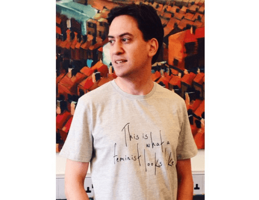
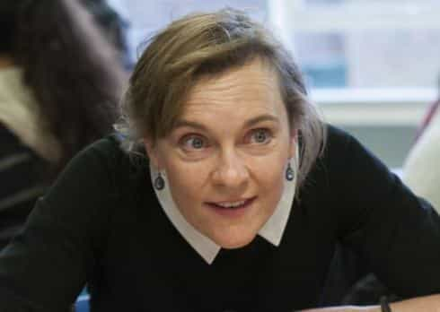
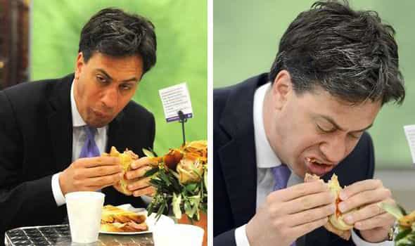

< < < Back
The Russian Opposition Leader’s Girlfriend vs. The British Opposition Leader’s Wife – Return Of Kings
The wild west of Russian politics
This week the Russian opposition leader Boris Nemtsov was shot four times by gunmen at the Vasilyevsky Spusk bridge leading to Red Square, home the Kremlin. Whatever one’s view of Putin and Russian politics, Nemtsov was a man willing to put his balls on the line.
Driven to reform latent Soviet structures of governance, the one-time deputy prime minister of Russia was to be the great liberal (in the true sense of the word) heir to Yeltsin. In later years he campaigned against corruption and recently against the war in Ukraine.
Agent of American imperialism or not, he was opposition in a country where being the opposition can leave you with polonium in your breakfast. Many of his peers cashed their chips in and fled to London, to live in paranoid luxury.

Boris Nemtsov, who “loved women”
The key witness to the murder is Nemtsov’s 23-year old Ukrainian girlfriend, Anna Duritskaya, who was in the car with him when he was shot. Nemtsov was 55 when he died—more than twice her age. Duirtskaya is a model—flawless-skinned, high-cheekboned, long legged Slavic beauty.
She is currently under arrest as a key witness in the killing and is, like any good woman of the Eastern bloc who puts family first, upset about not seeing her grandmother.
The Mr. Bean-ization of British politics
Ed Miliband sporting a ‘This Is What A Feminist Looks Like’ T-Shirt and spindly arms.
While a Russian opposition leader is murdered in the streets of Moscow by the side of a lover half his age, his British opposite number cuts a more pedestrian figure. Ed Miliband is the privileged son of a Marxist academic who grew up in the leafy North London suburb of Primrose Hill.
His political career has mirrored that of many other comfortably-off British politicians: graduation from Oxford, job in the media, bottom rung position in the Labour Party apparatus followed by progress into the current leadership of of the party and a shot at the Prime Ministership.
Ed Miliband is married to Justine Thornton, a lawyer who, when not appearing in court, spends her time visiting girls’ schools for the purposes of instilling feminist indoctrination in girls. The Evening Standard, owned by the Lebedevs and often pushing feminist propaganda, reports her as telling these young women to get their priorities straight:
…it is ‘really important’ that women are able to have a successful career and a family.
She is also a dutiful militant for the reversal of gender roles, and:
…hopes that in future there will be more ‘political husbands.’
Justine Thornton appearing at a school in Camden, London to convince girls to become lawyers.
Mrs. Thornton, or Ms. Thornton, as the equalist naming convention might have it, will certainly have brushed up to a 7, maybe even an 8, back in her Cambridge days. However, the single-minded pursuit of a legal career has left her with with the deep furrows and sallow skin of a woman that spends inordinate amounts of time in deep thought surrounded by books.
The Milibands would certainly have put lots of cash in the pockets of East European nannies over the years.
Worlds apart
A brief snapshot of two leaders of political opposition and their conjugal arrangements, in two historical hearts of empires 1,500 miles apart, one dead and one living, one cavorting with girl in her sexual prime half his age the other hitched to an austere scold with a monk’s haircut, tell us everything we need to know about modern Britain, its politics and its values.
First, the men themselves. Boris Nemtsov is eulogized as follows by, Anna Nemtsova (no relation), a Newsweek correspondent:
He was a revolutionary, a walking storm, sometimes rude and rough in his comments, but always an optimist and a free thinker.
She goes on:
If Nemtsov believed in something, he was never hiding behind anybody’s back. He shot his ideas out without any self-censorship, or demonstrated them with a banner in his hands out in the street, bravely, no matter how many times police arrested him for his anti-Putin protests, no matter how many death threats he received.
Following another arrest, Nemtsov had told the same journalist: “Why should I leave my country? I love Russia. Let them, the thieves and criminals, leave.” Like a man of valour, he stuck to to his principles, and as we saw this week, he paid the ultimate price.
Ed Miliband, on the other hand, is a politician from the age of perception management. British comedy legend Alexei Sayle told in a 2012 interview of being approached by him at a function to be mechanically told by Miliband that it was 25 years since Sayle had released his top 20 comedy single, ‘Ullo John! Gotta New Motor?’
The politician claimed “they’d loved it in the Miliband house.” Sayle said even this chunk of party small-talk seemed contrived:
Later, I did think that his knowledge seemed a bit…fake. And I wondered if he’d just said to his assistant, ‘Google some information about that —-, will you?’
In May last year Miliband managed to look a pillock again when, in desperate need of a photo-op that would make him appear like a man of the people, he agreed to eat a bacon sandwich. A couple months later, he declared that “photo-op culture” demeans politics, but by October was back at it again, dutifully posing in a “This Is What A Feminist Looks Like” t-shirt.

British men, know your place
Just as men like Boris Nemtsov should be free to pursue political change by fair means in the societies they live in without being murdered for their trouble, so should men like Ed Miliband be free to marry a careerist who decides to sacrifice their femininity in pursuit of a transient career that nobody will want to remember.
Ed Miliband probably is who he is—a left wing politician hell-bent on pleasing everybody and offending nobody—as a result of some innate biological feature or an overbearing Jewish mother. It’s not for us to fix that.
The question British men should consider is “What would happen in Britain if a 55-year old politician was had a 23-year old Ukrainian model girlfriend?” Or conversely, “What is different about Russian society that makes it acceptable for a 55-year old politician to have a 23-year old Ukrainian model girlfriend?”
The answers are: to the first, he would be hounded out of public life forever, or consigned to the dustbin of bizarre, tolerated weirdo politicians like Lembit Opik or other sexual miscreants from the UK Liberal Democrat party.
To the second: Russia is a society where traditional values have not been utterly usurped by Cultural Marxism. In Russia, pressure yet exists for men and women alike to conform to traditional gender roles. How many Russian women have you seen lately with the side of their heads shaved?
A man of any age pursuing the romantic and sexual love of a young woman in her sexual prime is natural, positive thing, and only a sick, demented society overtaken by the cult of equalism will rule otherwise.
I only found the mention of Nemtsov’s girlfriend’s age shocking because I, too, have been slightly indoctrinated into the mores of such a society—Britain. This weekend, I’ll try to reverse some of this brainwashing with a shot or two of Russian vodka—in memory of Boris Nemtsov.
Read More: Ever Wonder What Kind Of Man Becomes A Russian Alpha?


{kind=link}
{kind=link}
{kind=link}